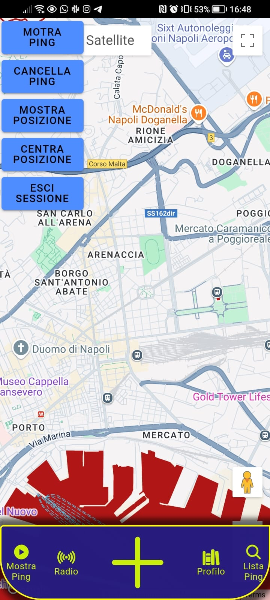
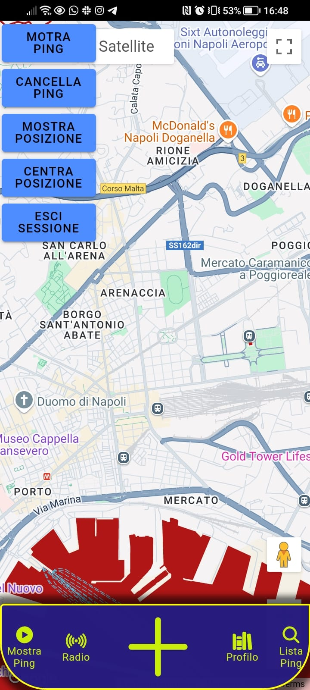

Ciao, Sono Manuel Cerqua
Backend Developer con esperienza in Spring Boot e Angular.
Backend Developer con esperienza in Spring Boot e Angular.
Aggiungi informazioni su di te qui.
Elenca le tue skill principali qui.
Descrivi alcuni progetti chiave su cui hai lavorato.
Aggiungi la tua esperienza lavorativa qui.
Inserisci i tuoi dettagli di contatto.
Sono Manuel Cerqua, un giovane appassionato con diversi anni di esperienza nel settore. Dedito al lavoro e con un forte desiderio di apprendere, ho sviluppato solide competenze in programmazione e ottimizzazione dei processi produttivi.
Diploma di Perito Industriale presso ITS Galvani, Giugliano (NA), 2015 - 2020
Operaio Specializzato presso Acciai Inox Srl, Giugliano (NA) dal 2019. Programmazione e utilizzo di macchine CNC per la lavorazione dell'acciaio inox. Collaboro con il team per ottimizzare i processi produttivi.
Attestato Java Oracle: Java Foundations Associate
Sono particolarmente ferrato nell'implementazione di **API REST** utilizzando **Spring Boot** e nell’uso dei concetti fondamentali di **Angular** per lo sviluppo di interfacce front-end. Amo costruire applicazioni che siano scalabili, performanti e che abbiano una struttura pulita e ben organizzata.
Ho esperienza nell'utilizzo di Spring Boot per lo sviluppo di servizi RESTful, nella gestione di routing, e nell'integrazione con database tramite JPA. Conosco le principali funzionalità del framework, tra cui:
Angular è il mio framework preferito per la gestione della parte front-end. Mi sento a mio agio nell'uso dei concetti base e nella creazione di componenti dinamici e modulari. Le mie competenze includono:
Anche se non ho ancora portato a termine progetti completi utilizzabili pubblicamente, sto lavorando su alcuni progetti personali che rappresentano le mie competenze e la mia passione per lo sviluppo. Ecco i principali su cui sto concentrando le mie energie.
PinGo è un'app per dispositivi mobili a cui sto lavorando da circa un anno con alcuni amici. Il progetto è realizzato utilizzando **Ionic**, un framework che trasforma il codice Angular e HTML in linguaggio nativo (Java/Kotlin) per Android Studio. L'obiettivo di PinGo è fornire una soluzione di geolocalizzazione che consenta agli utenti di creare, condividere e visualizzare punti d'interesse sulla mappa, creando una community attiva e partecipativa.
 

Stato del Progetto: In fase di sviluppo.
Questo è un progetto interno, nato dall’esigenza di gestire meglio le attività e le task del team che lavora su PinGo. Ho realizzato una sorta di **CRM** utilizzando tecnologie di front-end e back-end per monitorare le attività in corso, le task completate e quelle da assegnare. Questo strumento ci permette di mantenere una visione chiara sullo stato dei lavori e migliorare la produttività.
Stato del Progetto: In utilizzo nel team, ma ancora in fase di sviluppo per miglioramenti futuri.
Anche se non ho ancora maturato esperienze professionali dirette nel settore IT, la mia determinazione e la passione per il mondo dello sviluppo mi hanno spinto a lavorare costantemente su progetti personali per accrescere le mie competenze. Sono convinto che la mia motivazione e la capacità di apprendere rapidamente mi rendano pronto a mettere in pratica ciò che ho studiato e ad affrontare qualsiasi sfida professionale inerente alle tecnologie che padroneggio.
Durante gli ultimi anni, ho dedicato il mio tempo libero allo sviluppo di progetti personali, tra cui la creazione di un'applicazione mobile e di un sistema CRM. Questi progetti mi hanno permesso di acquisire esperienza pratica e comprendere le dinamiche di sviluppo in team e la gestione dei workflow.
Ho investito in formazione personale attraverso corsi online e tutorial, ampliando le mie competenze in linguaggi come **Java**, **JavaScript**, e tecnologie come **Spring Boot** e **Angular**. Questa dedizione mi ha fornito una solida base tecnica e la capacità di adattarmi rapidamente a nuovi ambienti lavorativi.
Sono pronto ad accettare qualsiasi opportunità nel mondo dello sviluppo software che mi permetta di crescere e applicare le mie conoscenze. Nonostante la mancanza di esperienza diretta, la mia caparbietà, unita alla curiosità e all'intraprendenza, mi rendono entusiasta e motivato a iniziare un percorso professionale in questo campo.